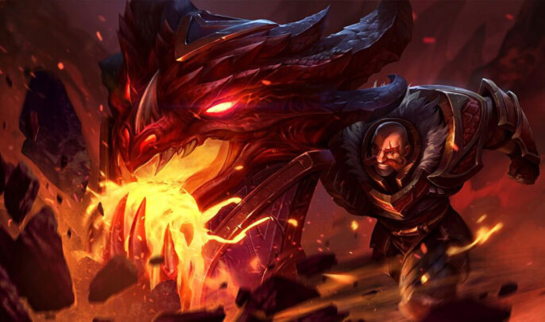
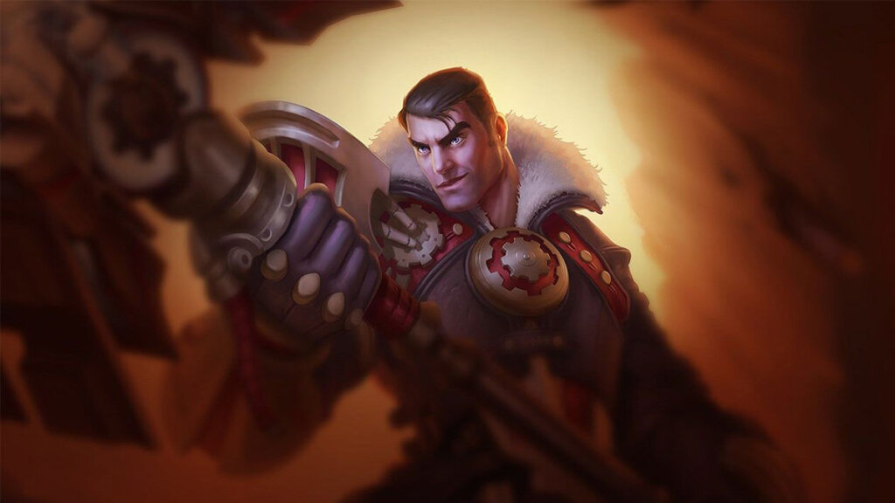
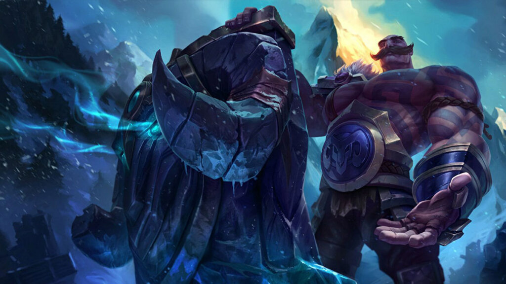
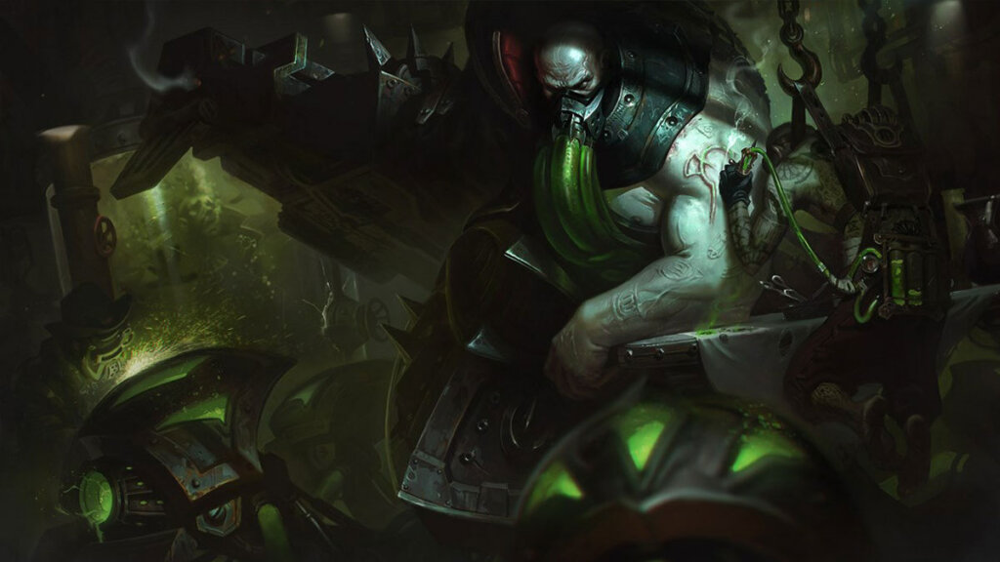

Meta Watch: Dealing with Jayce, Braum & Urgot
Summer is on the rise, and just like the sun, a couple of champions are shining slightly brighter this month.
Jayce – Debonair Drip
Jayce has been reformed in this season. No longer is he considered a super strong lane bully who annihilates you the moment you step up. His core strength now lies in his mid game spike, once he obtains Eclipse and Muramana. When he picks up those two items, he will roam around mindlessly dueling anyone who doesn’t see the damage coming.
However, because his laning phase is now more forgiving, more and more champions are able to survive it. Tanks like Malphite can suffer a bit early on, but after getting a bit of armor, can shut down Jayce with the click of a button in the midgame. Tanks like Cho’Gath have a pretty simple time sustaining against the constant barrage of poke, becoming a nightmare to deal with for Jayce when the game goes long.
The golden counter exists though, and that’s none other than your good friend Yorick Mori. Yorick plays much like Malphite, as he suffers a bit early on, but absolutely annihilates Jayce once his ultimate gets rolling, as Jayce has an extremely difficult time running away from a barrage of ghouls and will get stuck in Yorick’s walls. Just remember: Counter good looks with uglies, and Jayce won’t see the light of day.
Braum – Poro trip
Another good looking muscular man, this time down in the botlane. Braum is good at keeping his ADC alive against heavy dive compositions and engage supports. His shield and extreme disengage potential with his passive and ultimate are extremely hard to brute force your way through. Luckily, we have a solution for that.
A famous Braum player once said: “Don’t force me to play into ranged matchups”, and the statement holds for most cases. While Braum can still all in them if they’re not careful, mages like Xerath, Swain and Morgana can really shut him down in the laning phase and even later on. Poke is king when playing against Braum.
When picking Melees against Braum, be extremely careful when engaging too hard, as Braum can quickly turn the tides if your positioning is off. The golden counter here is Gragas, as he brings strong poke to a melee lane, and has a free unblockable ticket to ADC-pounding town with his Body Slam Flash combo.
Urgot – “You’re crabs, with LEGS!”
Not only does he have odd resemblance with Bane from Batman, he’s truly the bane of toplaners looking to have a good time right now. Extreme power, surprisingly strong all ins, and a new buildpath using Titanic Hydra is what’s making Urgot annihilate toplaners in any elo.
Just like Jayce, Urgot has been reformed into something new. No longer is he a killer of tanks, slowly whittling down his opponent. He now excels at ruining the lives of squishier carry toplaners. That said, Urgot’s biggest counters are the champions that can go head on in bulkiness and survivability. Mordekaiser and Volibear are the real winners here, as they can build early armor items to withstand an entire Urgot all-in.
When playing against Urgot, it’s extremely important to understand when he’s on powerspikes and when he’s not. Tiamat and Titanic Hydra are his biggest powerspikes, and especially important is his spike at Level 9, when his W becomes permanent if he wishes. Before level 9, Urgot quickly loses damage as soon as he has used up all his spells, due to their long cooldowns. If you’re able to survive through that, you’ll be able to retaliate. From there, it’s crabs for dinner.